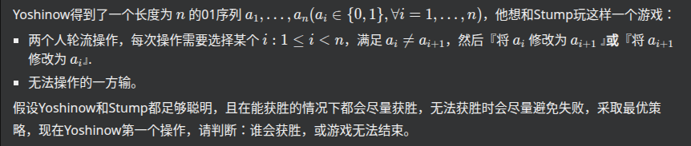

Yoshinow and 01 Game 题解
声明：本文使用 ChatGPT 参与编写
你问我为什么不用 ds？因为
——语出 ChatGPT
原比赛的 B 题。（虽然是乱序的）

这份代码其实对应了一个非常漂亮的“三分类”结论：先手必胜、先手必败、或者双方都无法强制获胜而可以无限进行。
核心只需要统计 0 和 1 各有多少个，甚至完全不需要关心它们的具体排列。
一、先把游戏操作看懂
对于某个位置 ，要求
也就是说，只能在 01 或 10 上操作。
操作有两种：
-
把 改成
-
把 改成
所以本质上就是：
找到一对相邻的不同数字，把其中一个改成另一个。
例如：
1 | |
中间的 01 可以变成
1 | |
或者变成
1 | |
二、为什么这道题会出现“无法结束”？
普通博弈题通常是：
谁不能操作谁输。
但这道题不一样，因为玩家可能一直移动“分界线”。
例如：
1 | |
只有一个分界点：
1 | |
如果操作分界点，可以变成
1 | |
再变成
1 | |
也可以反过来：
1 | |
于是这个分界点可以来回移动。
例如：
1 | |
所以并不是每一局都必然结束。
题目规定：
能赢的时候尽量赢；如果无法获胜，就尽量避免失败。
因此我们实际上需要考虑三个结果：
-
先手可以强制获胜
-
先手无法获胜，但对手也无法强制获胜，可以无限进行
-
先手无论如何都会输
代码中的对应关系就是：
1 | |
三、第一种情况：全是同一个数字
如果：
1 | |
或者：
1 | |
那么根本不存在满足
的位置。
也就是说：
第一个人连一步都走不了。
因此先手直接输。
代码：
1 | |
这很好理解。
四、第二种情况：某个数字只出现一次
例如：
1 | |
这里 0 只有一个。
注意这个唯一的 0 两边全部都是 1：
1 | |
我们只要把这个 0 改成旁边的 1：
1 | |
游戏立刻结束。
所以：
只要
0或1中有一个只出现一次，先手都可以一步结束游戏。
代码：
1 | |
这个结论与这个唯一数字在什么位置无关。
例如：
1 | |
唯一的 0 在最左边，也可以直接变成：
1 | |
再例如：
1 | |
同理。
所以只看 cnt0 和 cnt1 就够了。
五、最特殊的一种情况：，恰好两个 0 和两个 1
代码专门写了：
1 | |
这一行是整个题目最关键的特判。
为什么？
假设现在有两个 0、两个 1。
不管排列是什么，例如：
1 | |
先手只要进行一次操作，就会把某一个数字减少一个。
所以数量一定从
变成
或者
而我们刚刚证明了：
当一个数字只剩一个时，轮到谁操作，谁就可以立刻获胜。
所以：
1 | |
因此：
(2,2)是一个必败态。
这也解释了为什么代码必须单独判断：
1 | |
实际上这里的 n==4 与 cnt0==cnt1==2 是等价关系的一部分，因为：
但写出来更加直观。
六、剩下的情况为什么全部都是平局？
这就是这道题真正漂亮的地方。
考虑：
并且不是上面的 。
由于两种数字都至少有两个，所以：
设出现次数更多的那个数字叫做“多数数字”。
例如：
1 | |
假设 0 有 4 个，1 有 3 个。
那么：
现在观察一个非常重要的策略。
六点一：如果双方都至少有两个，就总能找到一步操作，使双方仍然至少有两个
因为两种数字都存在，所以字符串中一定存在一个：
1 | |
或者：
1 | |
在这个相邻不同的位置上，必然有一个数字属于“多数数字”。
例如：
1 | |
如果 0 是多数，那么可以把这个边界上的 0 改成 1：
1 | |
数量从：
1 | |
变成：
1 | |
双方依然至少有两个。
七、为什么这个策略可以保证“不输”？
假设当前：
并且 。
那么多数数字至少有三个。
比如：
我们采取这样的策略：
在一个相邻不同的位置，把“多数数字”改成“少数数字”。
于是：
仍然满足：
如果是：
就变成：
仍然安全。
如果是：
就变成：
也仍然安全。
八、那对手能不能强迫你输？
不能。
因为如果对手真的把你的某一个数字从 2 变成 1，例如：
1 | |
对方却把一个 0 改成 1：
1 | |
那么现在轮到你。
可是我们刚刚已经证明：
cnt0==1是一个先手必胜状态。
你反而可以一招结束游戏。
所以对手如果想获胜，不能主动把局面送到 (1,n-1)。
而只要局面始终满足：
你就始终可以使用上面的策略继续保持这个性质。
九、于是就出现了“双方都能保和”的局面
对于：
轮到谁都一样：
-
他可以采用这种策略保证自己不输；
-
另一方也可以采用同样的策略保证自己不输。
因此没有任何一方能够强制对方进入失败态。
于是游戏可以一直进行下去。
所以这些情况统一判：
1 | |
也就是：
Neither player can force a win，游戏可以无限进行。
十、把所有情况整理起来
实际上整个题目最后可以压缩成下面四种情况。
设：
情况 1：有一种数字一个都没有
没有合法操作。
所以先手输：
1 | |
情况 2：有一种数字恰好只有一个
唯一的异类可以直接修改成旁边的数字，立即全部相同。
所以先手赢：
1 | |
情况 3：，恰好两个 0、两个 1
先手走一步后，一定变成：
或：
后手可以立即获胜。
所以先手输：
1 | |
情况 4：其他所有情况
也就是：
双方都可以不断避免进入必败状态。
于是：
1 | |
十一、代码
1 | |
复杂度为 。
如果把它写成竞赛题正式题解，最值得强调的其实是 “为什么除了 (2,2) 以外，cnt0,cnt1≥2 就一定是平局”：关键不是证明“游戏一定不会结束”，而是证明双方都存在一个保证自己不输的策略。这一点才是这道题和普通必胜/必败博弈最大的区别。
只交了这一发，不搞提交记录了。